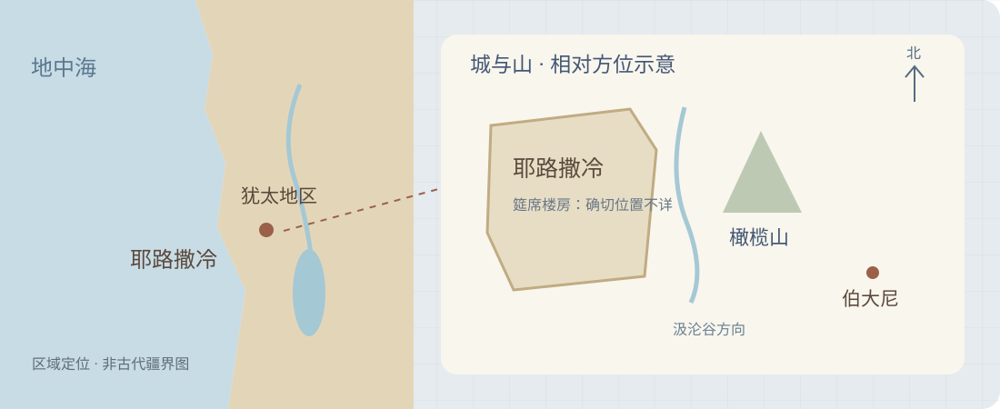

藉圣灵，凭信心，真实相交
主日29问78守住记号与实在的区别；问79守住记号与实在的联系。二者一起，才是完整的改革宗圣餐观。
不能把记号变成救主，也不能把救主的应许化为一个空记号。
耶稣基督真实地临在圣餐中：他不是以饼酒变质的方式进入我们的口，而是藉圣灵，使信徒凭信心真实分享他自己及其完全救恩。真实，说的是所领受的救主；属灵，说的是圣灵施行的方式。
主日29问78守住记号与实在的区别；问79守住记号与实在的联系。二者一起，才是完整的改革宗圣餐观。
基督的苦难与顺服为信徒的益处；确据被坚固，灵魂得滋养，争大的人学习服事，领餐的人盼望国度。
记住四个词：记号、圣灵、归我、服事。记号不变质；圣灵使相交；救主功德归我；感恩化为服事。此为学习口诀，不是新增的信条术语。
主日29仍在《海德堡要理问答》第二部分“论人的救赎”。它不是先问我们能给神多强的敬虔表现，而是先问基督究竟赐给我们什么。因而，感恩顺服必须从真实领受救主而来；我们不能用感恩购买救赎，也不能用救赎的名义取消感恩。
阅读层次：讲章全文可连续宣读；前后的历史、释经、图解、原典和讨论供深入学习。正文为本次原创讲章，未冒称任何牧者的既有作品。主日28旧项目保留，本主日为独立项目。
按给定大纲保留诗歌次序。“21篇1–3节”按前后用语理解为韵诗21篇1–3节；不同韵诗本的分节与圣经节号未必相同，具体仍按当地所用诗本。诗篇20把倚靠从车马转向神的名；诗篇21歌颂王因神的拯救欢喜；诗篇1以结果子的树描绘有福的生命。它们帮助我们从倚靠救主走向感恩生活。本页不据编号猜填圣诗14、9首的曲名、歌词或录音。
下列经文为《和合本》简体CUVS，保留来源词语，仅合并原网页汉字间的排版空格；信条内所引经文按CCI原样保留。两类文本不彼此替换。完整读经随站保存，外部出处链接需要网络。
1 22除酵节，又名逾越节，近了。
2 祭司长和文士想法子怎麽才能杀害耶稣，是因他们惧怕百姓。
3 这时，撒但入了那称为加略人犹大的心；他本是十二门徒里的一个。
4 他去和祭司长并守殿官商量，怎麽可以把耶稣交给他们。
5 他们欢喜，就约定给他银子。
6 他应允了，就找机会，要趁众人不在跟前的时候把耶稣交给他们。
7 除酵节，须宰逾越羊羔的那一天到了。
8 耶稣打发彼得、约翰，说：你们去为我们预备逾越节的筵席，好叫我们吃。
9 他们问他说：要我们在那里预备？
10 耶稣说：你们进了城，必有人拿着一瓶水迎面而来，你们就跟着他，到他所进的房子里去，
11 对那家的主人说：夫子说：客房在那里？我与门徒好在那里吃逾越节的筵席。
12 他必指给你们摆设整齐的一间大楼，你们就在那里预备。
13 他们去了，所遇见的正如耶稣所说的；他们就预备了逾越节的筵席。
14 时候到了，耶稣坐席，使徒也和他同坐。
15 耶稣对他们说：我很愿意在受害以先和你们吃这逾越节的筵席。
16 我告诉你们，我不再吃这筵席，直到成就在神的国里。
17 耶稣接过杯来，祝谢了，说：你们拿这个，大家分着喝。
18 我告诉你们，从今以後，我不再喝这葡萄汁，直等神的国来到。
19 又拿起饼来，祝谢了，就擘开，递给他们，说：这是我的身体，为你们舍的，你们也应当如此行，为的是记念我。
20 饭後也照样拿起杯来，说：这杯是用我血所立的新约，是为你们流出来的。
21 看哪！那卖我之人的手与我一同在桌子上。
22 人子固然要照所预定的去世，但卖人子的人有祸了！
23 他们就彼此对问，是那一个要做这事。
24 门徒起了争论，他们中间那一个可算为大。
25 耶稣说：外邦人有君王为主治理他们，那掌权管他们的称为恩主。
26 但你们不可这样；你们里头为大的，倒要像年幼的；为首领的，倒要像服事人的。
27 是谁为大？是坐席的呢？是服事人的呢？不是坐席的大麽？然而，我在你们中间如同服事人的。
28 我在磨炼之中，常和我同在的就是你们。
29 我将国赐给你们，正如我父赐给我一样，
30 叫你们在我国里，坐在我的席上吃喝，并且坐在宝座上，审判以色列十二个支派。
天父，求你赐我们受教的心。使我们不以有限的感官限制你的应许，也不以自己的想象取代你的话。藉圣灵使我们认识那位为我们舍己、如今复活掌权的救主；让忧伤的人得安慰，让争大的人学服事，让教会在真理与爱中同领主的恩惠。奉耶稣基督的名，阿们。
| 层面 | 作者／受众／年代 | 处境与目的 | 证据边界 |
|---|---|---|---|
| 福音书的写作 | 教会传统归于路加，保罗的同工、医生；书卷正文没有自署作者。路1:3与徒1:1均献给提阿非罗，亦服务更广的读者。 | 路1:1–4说明作者查考、按次序记述，为使读者确知所受教导可靠。路加—使徒行传展示以色列所盼望的救恩，怎样藉受死复活的弥赛亚临到万民。 | 提阿非罗的详细身份、写作地点和精确年份未能由正文确定。ESV导论以约公元62年之后作为其路加—使徒行传年代讨论的起点；这不是本书明言的落款。 |
| 最后晚餐的事件 | 路22:1–30叙述耶稣受难前的逾越节；通常以公元30或33年为受难年代的主要讨论方案。原初同席者为耶稣与使徒。 | 罗马统治下的耶路撒冷，逾越节唤起从奴役中得释放的记忆。宗教领袖图谋杀害，犹大寻机交人，门徒又争论地位；耶稣却以自己的身体和血解释真正的拯救。 | 事件日期不等于福音书成书日期。主人的姓名、楼房确切地址、端水者身份、席间每只杯的后世礼序编号，本段没有交代。 |
| 要理问答的形成 | 1563年，普法尔茨海德堡；腓德烈三世推动，乌尔西努为主要起草者，亦有其他教牧与学者参与。用于青年、会众、牧者和教师的教导。 | 宗教改革后的教会需要清楚、一贯的圣道与圣礼教导。在圣餐争论中，问78–79同时排除变质理解与空洞记念，给普通信徒可领受的安慰。 | 俄利维亚努的具体参与程度有历史讨论；不把1563年的争议直接投射成第一世纪门徒已使用的技术术语。 |
历史背景的价值，不在替经文增加戏剧效果，而在帮助我们听清经文原来的重量。参阅ESV路加导论、CCI海德堡历史导言。关于医生身份，西4:14提到路加；把这位路加与第三卷福音书作者相连，是传统作者归属的判断，不能误称路1序言已经直接署名。
路加从救主降生的应许展开，9:51以后突出耶稣定意向耶路撒冷而去；19–21章记入城、教导与对末后之事的警醒；22–23章进入受难，24章以复活及圣经的应验收束。路22不是一个偶然夹入的宗教仪式，它位于救主使命的转折处：他解释将要发生的死亡，也为复活以后、再来以前的教会留下应许与吩咐。
从路22往后读，客西马尼的顺服、被捕、彼得否认、审问、十字架与复活，使“为你们舍”不再只是桌旁的语言。路24:26–27把基督的受苦与得荣耀连在一起。筵席没有使十字架变得不必要；十字架使筵席所应许的益处有了真实根基。

对最初同席的门徒，主解释他将要为他们成就的事；对福音书读者，路加见证耶稣的死怎样与神的应许一致；对1563年及今日学习要理问答的教会，问78–79帮助我们按这见证理解圣礼。这是三个相关却不同的听众层面，不能把它们混成同一场对话。
说明门徒当时同席、后来教会领餐和今天的教义表达，需要分别处理。本文不会把端水的人解释为未经证实的秘密身份，也不把后世完整逾越节家宴程序逐项套进本段。
| 段落 | 文本观察 | 神学重心 | 如何服务本讲 |
|---|---|---|---|
| 1–6节 | 节期近了，领袖怕百姓；撒但进入犹大，犹大参与图谋。 | 罪并非无知的小差错；恶者活动与人的责任同时真实。 | 外在接近耶稣不能替代信靠耶稣。圣餐的真实不表示不信的人自动蒙救。 |
| 7–13节 | 耶稣差彼得、约翰预备，门徒按主的话找到地方。 | 主走向受难仍主动掌管；预备发生在应许与顺服中。 | 圣礼属于基督的设立，不由教会任意发明意义。 |
| 14–18节 | 时候到了，主热切愿意同吃；节期指向神国里的成全。 | 过去的逾越、眼前的受难、将来的国度在这席间相连。 | 圣餐既有记念，也有末后的盼望，不缩成当下感受。 |
| 19节 | 拿饼、祝谢、擘开、递给；身体为门徒舍，吩咐如此行以记念他。 | 施予者是主；身体的舍弃解释十字架的代赎意义。 | 按设立之言理解记号，不由“看不见”推出“没有实际恩惠”。 |
| 20节 | 饭后之杯；以血所立的新约；为门徒流出。 | 联于出24:8与耶31:31–34，约的赦罪应许由中保成就。 | 杯不变成一份抽象契约；圣礼语言以记号表达所表明的真实恩典。 |
| 21–23节 | 卖主之手仍在同席叙述中；人子按所定的去世，卖主者有祸。 | 神的旨意不免除作恶者责任；外在同席与内在领受不可混同。 | 让应许与警告同在，不把饼杯当成无条件的护身符。 |
| 24–27节 | 门徒争大；主对照外邦权力与自己服事人的样式。 | 救主的服事重塑门徒的群体伦理。 | 真实相交的果子不是属灵优越感，而是谦卑、相爱与服事。 |
| 28–30节 | 主应许国度、同席与使徒性的审判职分。 | 国度由主赐予，不由门徒争抢；跟随中的坚忍有盼望。 | 承接恩赐而忠心服事，不把每位信徒都套成坐十二宝座的使徒。 |
“这是我的身体”：改革宗承认这句是主有权柄的设立之言；也按圣经中记号与所表明之事的关系理解它。创17:10–11将约的记号与约连说，出12:11把所吃的称为耶和华的逾越节，林前10:4把磐石与基督连说。这不是取消词义，而是按圣礼语言的性质理解。问78以洗礼的水作类比，并由问79补足它所担保的实在。
“这杯是……新约”：路22:20不是说杯的材质化成一份约。杯以所盛之物及主的解释指向流血立约。这个关系说明“是”不能在这里一律压成物质同一；但这也不表示主只有修辞，没有实际施恩。
“记念”与“同领”：路22与林前11说明记念与宣告；林前10:16–17明说同领基督的身体和血，并连于一个身体。两组经文共同约束我们的理解：纪念真实历史，领受活着的救主；不是重演他的献祭，也不是只保留我们的心理活动。
“为你们”：主的恩惠有明确的个人指向，却不是任凭人不信、拒绝悔改，也照外在动作保证得救。设立之言须与同段卖主警告、林前11的省察、以及教会的牧养监督同读。
本页按所用CUVS完整文本释经，并与林前11:23–26的平行见证同读。路加在文学次序上把21节卖主之手放在设立之后；本文不靠强行重排四福音的每一细节建立论点。
主日29 · 问78–79 ｜ 读经：路加福音22:1–30
主耶稣基督所爱的弟兄姊妹：
当饼递到手里，杯摆在面前，我们会问：这里究竟发生了什么？眼睛看见的仍是饼，口中尝到的仍是酒。我们若不承认它们变成另一种物质，是不是就只能承认，这一切只是帮助我们想起一位已经离开的老师？
主日29不许我们停在这两个选项之间。它一面坚决说饼酒没有变成基督的身体与血，一面同样认真地说，圣灵使我们真实分享基督。记号没有变成救主，救主也没有因此缺席。他不让我们敬拜记号，却藉记号向信徒担保：他真实把自己与他的恩惠赐给我们。
这一点为什么重要？因为我们需要的，不只是更清晰的宗教记忆，而是与活着的救主相交。一个只留在过去的榜样，可以激励人，却不能除去我们今天的罪债；一种只有外在动作的礼仪，可以带来熟悉感，却不能使灵魂得生命。感谢神，主赐下的圣餐比我们的回忆更可靠，也比我们的感觉更深。
今天我们听见的福音是：耶稣基督真实地临在圣餐中。我们从两方面思想：第一，这种真实临在的性质；第二，这种真实临在所带来的益处。
让我们先来到路加所记的那一夜。逾越节近了，祭司长和文士寻找除掉耶稣的机会，犹大也在寻找没有群众在场时交出他的时机。人的恶意正在逼近。但桌子的主人没有失去主动；他差遣门徒预备，又在时候到了时与使徒同席。
逾越节使人想起埃及的审判、羊羔的血与神的释放。过去的百姓曾因神所设立的代替蒙保全，也照神的话吃那一餐。现在，耶稣在同样承载救赎记忆的筵席上，把门徒的眼光引向自己。他没有只说，神过去拯救了我们的祖先；他宣告自己的身体将为他们舍，自己的血将为他们流。
主在这里解释十字架。即将发生的不只是一个好人被恶人害死，而是中保为罪人舍己，以血成就新约的赦罪应许。若不先听见这个解释，我们讨论饼杯的性质，就会离开福音的中心，只剩一场关于物质的辩论。圣餐的中心不是饼发生了多么惊人的改变，而是救主为罪人成就了多么完全的救赎。
那么，为什么主称饼为自己的身体？问78先让我们想起洗礼。我们并不因为洗礼的水表明洁净，就说水变成宝血；水不能替基督担当刑罚，也不能靠它本身洗去罪。可是，神所设立的水并非毫无意义：它表明并印证神的应许。圣餐中的饼与杯也必须这样按主所设的关系来理解。
请留意，路22:20把杯称为以血所立的新约。没有人需要先想象杯子的材质变成一个约，才能承认主的话真实。记号按它所表明的实在得名，是圣经已经使用的表达。因此，问78不是教我们对主的话打折扣，而是教我们用圣经本身的方式听主说话。
但弟兄姊妹，我们不可把问78当作主日29的全部。若我们只会说“没有变”，却从未听见主说“我要使你真实有份”，我们就只守住了围栏，没有走进草场。问79紧接着问：既然没有变，主为什么仍这样称呼？答案不是“因为这种说法能给人一种庄严的气氛”，而是因为主确实要教导并担保：信徒藉圣灵分享他自己。
圣礼的记号不是救主的替身；它是救主亲自设立、用来坚固信心的凭据。我们不把饼当作基督，也不把基督的应许当作空话。
所以，我们必须把“属灵”这个词听准确。属灵，不是“其实没有，只是在心里想”；属灵，是圣灵亲自行事。使信徒与基督相交的，不是我们记忆的力量，也不是牧者手中的能力，更不是饼酒自身的性能，而是那位赐生命的圣灵。
我们所领受的也不只是关于基督的知识，或与他本人分离的一种宗教力量。我们真实分享的是那位为我们道成肉身、舍身流血、从死里复活、如今升天掌权的基督。因此，说真实相交，并不要求我们用口把救主的肉身吞下；说凭信心领受，也不表示所领受的只是我们自己制造的想象。
有人仍会问：基督的身体在天上，我们在地上，怎么可能相交？这问题不能靠否认升天解决。使徒信经教我们承认他升天、坐在父的右边；要理问答主日18也帮助我们分别他神性的无限与人性的真实。复活没有使他的身体不再是身体，荣耀也没有使他的人性失去人性的真实性。
同样，我们不能为了保住人性的真实，就把基督分割成一位远在天上、另一位留在地上的救主。他始终是一位基督，神人二性不混乱，也不分离。圣灵使我们与这位完整的救主联合；他如何成就这相交，不是我们能用物理模型穷尽的事，但也不因此变成虚假的事。
说主在圣餐中真实临在，也不只是重复“神无所不在”这个普遍真理。在他所设的圣礼里，主以自己的应许向教会施行特别的、使信心得滋养的相交。不是任何一餐都因神无所不在而自动成为圣餐；这里有主的设立、圣言的解释、圣灵的施行与信心的领受。
这就使我们明白信心的位置。信心不是把基督从缺席变成临在的开关，而是领受已经真实应许并施恩之主的空手。不信的人不能凭外在吃喝就取得救主；信心软弱的人却不必等到自己强壮，才允许自己接受坚固。礼物的真实性在赐礼物者的信实，不在领受者手指是否颤抖。
路加的记述也警告我们：卖主之人的手，竟能在同席的叙述里出现。外在坐在主旁边，并不等于内心信靠主。由此我们不能说圣餐本身虚假，只能说人可能真实领受记号，却没有凭信心领受记号所表明的基督。这既拆毁迷信，也催促我们省察。
我们因此不必在“物质变了”与“什么也没有”之间作选择。主所设立的方式是：饼酒仍按其本性被领受，圣灵却使信徒真实与基督相交。恩典不是被关在饼里面，救主也不是被留在回忆里面。在天掌权的主，藉圣灵真实供应地上的教会。
真实相交并不是一个供我们欣赏的高深概念。若问它怎样安慰一个惭愧的人、怎样扶持一个软弱的人、怎样改变一群争大的人，问79就把我们领进圣餐的丰盛。
第一，基督是我们灵魂真正的饮食。身体不能靠描述食物活着，灵魂也不能靠夸耀自己懂得许多宗教知识活着。主藉饼酒教我们认识，我们的生命必须持续依靠他。这里不是说每一次不领餐，称义就立即消失；乃是说蒙恩的人没有长成以后就不再需要救主的一天。
圣道与圣礼也不是两种互相竞争的福音。圣道宣告那一位基督，圣餐以可见的记号印证同一应许。神的话已经真实可靠；圣礼并不是修补神说话的不足，而是体恤听话之人的软弱。你会忘记，主使你再听；你会迟疑，主又让你看见、领取、尝到。
第二，基督的苦难和顺服确实为信徒的益处。问79把这一点说得极其贴近人心：他的救赎不是远处发生的一件伟业，与我的罪债却没有关系。藉着与他联合，我确实分享他为罪人得来的恩惠。
我们必须把这句话听得既有安慰，又有边界。我没有在历史中成为钉十字架的中保，也没有靠自己的苦偿还罪债。基督的义也不是像液体一样灌进我里面，使我的表现从此成为称义的依据。是神因基督的缘故赦免并接纳信徒，把救主完全的义归算给我们；他也使我们在与主联合中得着更新的生命。
我的罪债真实，却不需要第二位救主；我的顺服仍有亏欠，却不需要第二笔赎价。圣餐把我带回基督已经完全的顺服，而不是叫我完成他尚未完成的工作。
这里没有一笔交易要由我补款。信心并不替基督支付剩余部分，感恩也不是欠款通知。基督的受苦、舍命和顺服是救恩的根基；圣餐不是再做一遍这一切，而是担保他的恩惠确实临到信靠他的人。主一次献上自己，却一再用恩典扶持他的百姓。
第三，这种相交坚固确据。我们常把确据交给一种起伏不定的东西：今天有没有深刻感动，最近属灵状态是否明亮，祷告时是否感觉亲近。感觉不是毫无价值，但它不能坐在审判席上，决定主的应许今天真不真实。
主日29把次序颠倒过来：不是我感觉很真实，所以基督可能把自己给了我；乃是他信实地应许，所以我可以在感觉黯淡时继续信靠。一个忧伤、悔改、倚靠救主的人，不应当因为自己需要安慰，就断定自己没有资格接受主所设的安慰。
然而，坚固确据不是给顽固不悔改的人开脱。若一个人坚持欺骗、轻看教会的劝戒，却说“我领过圣餐，所以没有关系”，他正把主的记号用来对抗主的话。圣餐不能成为躲避悔改的屏障。教会要安慰软弱的信徒，也要按圣经警告、教导并保护主的桌子。
第四，真实相交要改变同桌之人怎样彼此相待。请看路22的上下文：就在这段筵席记述中，门徒竟争论谁算为大。我们也可能如此。一面认真讨论临在的性质，一面急着证明自己比另一位弟兄更属灵；一面伸手领受主白白给的恩惠，一面舍不得为别人让出一点时间、尊严和便利。
主说，他在他们中间如同服事人的。这里不仅给我们一个可模仿的温柔榜样；在身体为他们舍、血为他们流的上下文中，他的服事走向无人能够替代的救赎。我们不能替别人赎罪，却能因为主已经服事我们，不再靠争夺地位证明自己的价值。
看见这个次序，就知道感恩从哪里来：主先为我舍己，我才被释放去服事。不是我先服事得足够好，主才把自己给我。与基督相交并不消灭教会的职分与秩序，却使任何职分都不能成为践踏别人的权利。离席以后，怎样对待家中最容易被你忽视的人，怎样倾听教会中最没有发言权的人，都会显明我们是否认真听见桌子的主人。
第五，真实临在把我们引向将来的完全。主在这一席间说到神国里的成全，又应许门徒在他的国里同席。今天的圣餐是真实恩惠，却不是终局已经全部到来；今天我们凭信心领受，仍然软弱、仍会流泪、仍等待身体复活。
神没有以一口饼保证你明天免于所有病痛或工作困难。他赐下的应许更深：基督不会丢弃属他的人，他必带我们走到与他完全同在的终点。正因终点在他手中，今天我们可以在未完全里忠心，不用把每次领餐都变成一次必须产生强烈体验的考验。
弟兄姊妹，主日29最后把我们带回桌旁。饼仍是饼，所以我们不把受造物当作救主；主真实施恩，所以我们不把他所设的记号当作空物。他的完全救赎为我们所分享，所以忧伤的人可以得安慰；他的服事塑造我们的生命，所以争大的人应当悔改。
让我们带着罪与贫乏信靠他，按教会合乎圣经的监督省察领受，离开桌子以后学习服事，并在每一次记念中盼望主来。耶稣基督真实地临在圣餐中；我们所信靠的，不是一种圣物的能力，而是一位信实的救主。阿们。
恩慈的父，感谢你把圣餐赐给软弱而需要被坚固的教会。感谢基督一次完全的献祭与顺服，感谢圣灵使我们真实有份于他。求你使我们既不迷信记号，也不轻看记号；既不以自义夸口，也不因软弱绝望。让我们从争大转向服事，在感恩中盼望救主再来。奉耶稣基督的名，阿们。
问78说明：饼酒不变成基督的身体和血。神所设的记号不等于它所表明的实在；领受记号不是用口吞下基督肉身。
此图表现教义关系，不把圣灵或基督画成空间中的装置；箭头不是恩典从某个物体流出的机械路径。圣灵使人凭信分享整位基督，其方式超出物理图解。
| 必须分开的 | 不能拆散的 | 一句话检验 |
|---|---|---|
| 记号与所表明之事 | 基督的设立、应许与圣礼 | 我能否既说饼仍是饼，又说主真实施恩？ |
| 身体吃喝与凭信领受 | 外在礼仪与内在恩惠的圣礼关系 | 我有没有把外在动作自动当成得救？ |
| 基督的神性与人性属性 | 一位不可分割的基督 | 我有没有用人性遍在或分割救主解决难题？ |
| 称义的根基与成圣的果子 | 与基督联合中的赦罪与更新 | 我有没有把服事当赎价，或把恩典当不必服事？ |
人受造在神面前生活；救赎最终恢复并成全与神的相交，而不止是免受刑罚。
创3显明人因罪远离神；出12的血与筵席，出24的立约与吃喝，先知所应许的赦罪新约，指向基督。路22解释他以自己的血成全救恩；圣餐在他复活升天以后持续见证他的死；启19的羔羊婚筵和启21神与人同住，把盼望引向终点。每一阶段都有自己的历史位置，不能把所有筵席都当成同一个仪式，也不能把相关性削成偶然相似。
旧约圣徒不是靠羊血赚得永生，新约信徒也不是靠吃饼付清罪债。神的恩典之约在不同历史阶段施行，同一位基督是救恩的实底。新约的更新不是更换救主，而是应许在中保已经完成的救赎里显明、施行。主的约恩带着真实应许与真实责任；圣礼并不使所有外在参与者不论信与不信都自动得到救恩。
路22:29关于主赐国的表述，应连同父赐国与使徒受托的语境理解。它与圣约主题相通，却不能只凭某一个原文动词，就声称已经证明永恒救赎之约的全部细节。圣约神学服务于整本圣经的连贯，不是替每个词塞入预先设计好的体系。
路22的身体、血、新约、服事与国度；林前10的同领、一个饼和一个身体；林前11的设立、宣告、警告与省察；来9–10的一次献祭，共同说明圣餐。经文互相照明，却不抹掉各自重点：不能说路22已经直接使用了所有后来关于圣礼的术语，也不能让其中一个作者取消另一个作者的清楚教导。
不只有孤独或不安，更有罪债、隔绝、自义与争大。外在同席不能掩盖内心背离。
父赐中保，子顺服舍己，圣灵使信徒分享他的恩惠。圣礼印证同一福音。
省察而领受，拒绝自夸，照顾肢体，在服事与忍耐中盼望主来。
一位基督 · 真实二性
区别记号 · 不割断联系
圣灵工作 · 信心领受
苦难顺服归我 · 确据滋养
谦卑服事 · 国度同席
闭环不是让人的感恩反过来补足基督的救赎，而是让蒙救赎的人归荣耀给赐恩的神。果子显明根的生命，却不创造根的生命。
以下原文均出自CCI网站中文文本；不以其他译本补字或纠字。
答：绝对不是！洗礼中的水并不变成基督的宝血，水本身也无法洗去罪，只不过是神所设立的记号和保证而已1。同样，圣餐中的饼也不变成基督真正的身体2，而只是按圣礼的本质和特性3，被称为基督的身体4。
答：基督这样说是有充分理由的，因为他想藉此圣餐教导我们，正如饼和酒维持我们今世的生命一样，他那被钉的身体和流出的宝血是那喂养我们灵魂，使之存到永生的真正饮食1。但更重要的是，他要藉这有形的记号和保证向我们担保：第一，藉着圣灵的做工，我们的确是在分享他的真身体和宝血2，正如我们口里承认这为记念他而设立的神圣标志一样确定无疑；第二，他的一切苦难和顺服也确实成为我们的，好像我们受了苦，并偿还了自己的罪债一样3。
问79网页中的“口里承认”等措辞在本页照录，不从其他中文译本替换。这里的“原文”指所指定网站的中文原文，不是德文、拉丁文或希腊文原语。原文与本讲的解释、口诀、图示严格分开。
| 认信文件 | 所处语境 | 本讲作用 |
|---|---|---|
| 海德堡要理问答 1563 | 教会与青年的系统教导、牧养安慰，圣礼争议的澄清。 | 问78–79：记号不变质，圣灵使真实分享；问47–48：基督升天与二性的关系。 |
| 比利时信条 1561 | 圭多·德布雷等改革宗信徒在受逼迫处境中的公开认信。 | 19条：一位基督、二性属性；33条：圣礼的记号与印证；35条：圣餐真实相交与信心领受。 |
| 多特信经 1618–1619 | 多特会议处理抗辩派争议，阐明恩典与圣徒坚忍。 | 第五项14条：神所定的保守包括圣道、劝勉与圣礼，不因神保守就取消方法。 |
我们相信，慈爱的神因顾念我们的愚笨和软弱，为我们设立了圣礼，用以印证他所赐的应许，也为他赐下美好的旨意和恩典作保证，藉此建立并坚固我们的信心1。他在圣言2之外辅以圣礼，为要藉着我们的感官，将他用话语向我们宣告的和他在我们心中做成的一切更好地展现给我们，以此证实他赐给我们的救恩。因此，圣礼是内在不可见之事的外在标记与印证。藉着圣礼，神通过圣灵在我们心中做工3。因此，这些标志并非虚空或毫无意义，以至于欺哄我们，因为它们代表的是耶稣基督，离了他，它们就失去了意义4。此外，对于基督为我们设立的圣礼数目，我们感到满足。他设立了两个圣礼：洗礼和耶稣基督的圣餐5。
毋庸置疑，耶稣基督吩咐我们领他的圣餐并不是徒然的。在圣餐中，他藉着这些圣洁的标志将向我们显明的一切放在我们心里。虽然我们不明白这种做工的方式，正如我们不明白圣灵隐秘的工作9，但是，我们吃的是基督的真肉身，喝的是他的真宝血这一说法并没有错。然而，我们不是用嘴吃喝，而是凭信心用心灵吃喝。耶稣基督虽然一直坐在天上父神的右边10，但他始终通过信心这一纽带与我们交通。在这属灵的筵席上，基督使我们分领他自己，并在他一切的恩惠上有份；他也给我们恩典，让我们得享他以及他受苦受死所得来的功德11。藉着吃他的身体，基督使我们贫瘠的灵魂得滋养、得强健、得安慰；藉着喝他的血，他使我们的灵魂被更新、得舒畅。
正如神喜悦藉着福音的宣讲在我们身上开始这恩典之工，同样他也藉着听道、读经1，默想经文、圣经的劝勉、警告和应许2以及圣礼这些方法来维持、继续并完成这恩典之工3。
以上信条是教会对圣经教训的服从性认信，权威服在圣经之下。圣经提供根基，认信帮助我们完整、一贯地说明它；我们不能把一条信条抽离圣经，也不能让个人的“新解释”免于教会历代认信的检验。
▤ 六份认信完整原典库| 信经 | 主要贡献 | 怎样照明主日29 |
|---|---|---|
| 使徒信经 | 以三一结构总结救恩历史：受难、复活、升天、再来。 | 不因圣餐相交否认升天，也不因升天宣告主不再供应教会。 |
| 尼西亚信经 | 明确圣子与父同质，真实道成肉身，圣灵是赐生命的主。 | 领受的不是受造的次等救主；圣灵的工作不是信徒自发的心理联想。 |
| 亚他那修信经 | 精细分明三位一体与基督一位二性。 | 不把神人二性混合，也不把一位救主分开；荣耀的人性仍真实。 |
三经不是三种救恩，也不是三份都直接讨论圣餐的技术文件。使徒信经适于总纲认信，尼西亚信经在争议中更明确子与灵的神性，亚他那修信经细致守护三一与基督论的边界。它们回答“是谁”的根本问题，三项联合信条在宗教改革语境中进一步说明圣礼、称义与教会。
历史名称不等于作者署名：使徒信经不是十二使徒逐条合写；亚他那修信经作者不详，不是亚他那修亲笔。CCI尼西亚文本采用西方“和子而出”的措辞，这不是381年希腊文本原有的增补语。上述区别不改变本页对CCI中文正文的忠实照录。
| 误解 | 问题在哪里 | 应当怎样说 |
|---|---|---|
| “不变质，就等于没有真实临在” | 把圣灵的工作限制为物质变化。 | 属灵而真实：圣灵使信徒分享基督，而非饼酒自身产生救恩。 |
| “凭信心，就是自己想出来” | 把领受的工具当成恩惠的创造者。 | 基督设立并应许，圣灵施行，信心领受。 |
| “饼杯自动使所有吃喝者得救” | 混淆外在记号与救恩实在，无视不信的警告。 | 不信者不能靠外在动作取得基督；真实应许不被人的滥用取消。 |
| “他的功德归我，就是我自己已付赎价” | 抹去中保与蒙救赎者的分别。 | 基督独自成就，信徒因与他联合分享其益处；归算不是功劳由我产生。 |
| “每次领餐都是重新称义一次” | 把坚固信心当成反复取得／丧失身份。 | 圣餐印证同一完全救恩，滋养已蒙恩者；不是重做赎罪或不断重启称义。 |
| “有确据，就不必服事别人” | 把恩典与更新割开。 | 路22:24–27纠正争大；服事是感恩果子，不是获救资格。 |
| “没有感动，就没有领到任何恩惠” | 把感受当成主应许的裁判。 | 以应许为根基，也诚实省察是否麻木或不信；不追逐强烈体验。 |
罗马天主教以“变质”说明其圣体观，并自称弥撒与十字架是同一献祭的圣事性临现，而非另一个独立赎价；改革宗对其圣体和祭献理解仍有实质反对，但不应误说对方自称每天另添一位救主。路德宗通常以“圣礼联合”表达真实的身体血临在，不宜把其立场草率概括为其自身也常拒绝的“同质／同体说”。改革宗按问78–79承认：记号不变质，信徒藉圣灵真实分享基督；本页所反对的“纯主观记念”是一种理解方式，不据此断言所有其他新教群体都持完全相同观点。
比较资料：《天主教教理》1366–1367段与《协同式》详解第七章。这些用来查清他者的自我表述，不是本讲的认信标准。本讲未引入其他中文信条译本或威斯敏斯特准则逐字引句。
| 视角 | 核心问题 | 落在生活中的答案 |
|---|---|---|
| 法庭 | 我的罪债谁承担？ | 基督完全承担，不再把自责、苦修当第二笔赎价。 |
| 圣约 | 主的应许会随感觉改变吗？ | 圣礼印证神的信实，使我回到所宣讲的福音。 |
| 生命 | 我是否不再需要被滋养？ | 信徒持续靠主，不能用已有知识替代活泼信靠。 |
| 教会 | 谁和我同领？ | 同领一位基督的肢体，不能被我当作争位的对手。 |
| 末世 | 眼前软弱是否就是终点？ | 今天真实相交，仍盼望国度里的完全同席。 |
建议分两次学习，每次60–75分钟。先读路22，再选核心释义与处境应用题。答案默认平铺展开，可按需收起；请先尝试回答，再核对分析。
两问共同处理一个圣礼关系的两面。问78防止把记号与所表明之事混同；问79防止因二者有区别，就切断它们由主设立的联系。只讲前者，容易把圣餐缩成空记念；只讲后者而不守前者，又容易把真实相交解释成物质变化。完整答案必须同时说出：饼酒不变质，圣灵使信徒真实分享基督。
依据：问78–79；林前10:16–17。练习：用自己的话讲一遍，不能只用“不是天主教那样”作答，而要正面说明主究竟赐什么。
必须比较圣经怎样使用圣礼语言。路22:20称杯为新约，并不表示杯的材质变成一个约；创17:10–11把约与约的记号连说；出12:11、13把逾越节与血的记号放在神设立的关系里。按这种用法解释，是让圣经说明自己的表达。与此同时，问79与林前10的同领不许我们把它解释成没有实际恩惠的修辞。
检验：不能只说“是就是物质等同”，也不能只说“是不过代表”。要回答：谁设立关系？应许什么？圣灵使谁领受什么？
记念是真实领餐的一部分，却不足以穷尽圣餐。纯心理说明把主语放在我的记忆；属灵真实相交的说明把主语放在基督藉圣灵的施恩。所领受的不是一套关于耶稣的资讯，而是救主自己及其恩惠。圣灵不是使想象更强烈，而是按主的应许使信徒真实与基督相交。
依据：问79；比利时33、35条；林前10:16。追问：如果一位记忆衰弱、情绪低落却信靠主的信徒来领餐，他是否因此只能领到比较不真实的救主？不能这样衡量。
先保留一位基督、真实二性。基督神性不受空间限制，人性也不因荣耀就失去人的真实性；升天不是与教会的救恩联系中断。圣灵使信徒与整位基督联合，不要求他的身体被物理地搬入饼里。我们不穷尽其方式，却有神话语的保证，不必靠混淆二性或分割位格解决。
依据：问47–48、78–79；比利时19、35条；徒3:21；西3:1–4。错误路径：把人性说成不再有人性属性，或制造两位彼此分开的基督。
不是。基督的设立与应许在先，圣灵施行在先；信心是领受的工具，不是使救主变真实的原因。信心强弱不决定基督是否可靠。不信者不能靠吞下记号取得基督，却也不能因人的不信就宣布主的设立成了空话。必须区别神的信实、圣灵的工作与人的领受。
应用：对软弱者应指向信实的救主；对不信且顽梗者应警告，不能只说“来吃就一定得救”。外在礼仪与救恩实在不可自动画等号。
不是。唯一中保在历史中真实顺服、受苦、舍命，信徒没有成为另一位中保。与基督联合使我们分享他的救恩；神因基督的缘故赦免接纳我们，基督完全的义是称义根据。归算不表示功劳由我产生，也不表示把我的生活改善当作另一份义。与此同时，联合也带来更新，不能把称义和成圣彼此割断。
依据：问79；罗5:18–19；6:5–11。记忆句：功德来源是基督，领受工具是信心，果子是感恩顺服。
圣餐的反复施行不是救恩根基反复失效。基督一次献祭已完全；信徒在今生持续需要福音应许的印证、滋养与劝勉。我们应悔改认罪、求主赦免，却不应把圣餐想成每次为失效的十字架充值。主一再使信心转回同一完全救主，而非一次次换取身份。
依据：来10:10–18；问79；多特第五项14条。警惕两个方向：反复付赎价的焦虑，以及“已有救恩所以无需圣道圣礼”的自满。
至少显明外在接近圣物与真实信靠救主有别，也显明人子的死在神旨意之中，却不免除卖主者的责任。本讲不靠解决所有平行记述的精确离席时刻来证明教义；应许与警告可以由本段及林前10–11清楚建立。不要把“神掌管”说成犹大因此无责，也不要把他的恶说成主失去了救赎主动。
依据：路22:21–23；林前11:27–32；比利时35条。阅读纪律：先分清经文明确说了什么，再处理需要全书协调的历史重构。
因为路加把争大与主的服事放在筵席上下文中。若只讨论物质而忽略主纠正门徒，我们会漏掉经文对群体生命的要求。但应用必须保持恩典次序：基督先以无人可替代的救赎服事我们，我们才有被释放的生命去服事别人。不是先模仿得够好才能获救，也不是用服务行为代替代赎福音。
找一件实际行动：让出发言空间、照顾弱小、承担不起眼的责任。请说明这行动怎样出于已蒙恩，而不是用来证明自己比别人更蒙恩。
持续的是神恩典的救法、同一位基督作为实底，以及应许要求信心的领受。改变的是历史阶段与施行：逾越节回顾出埃及并预表，圣餐宣告基督已经舍己、如今施恩、将要再来。统一不等于所有礼规一致，特别是领受资格必须与新约的省察教导、公开认信及教会监督同读。
依据：出12；耶31；路22；林前10–11。避免两个极端：两个互不相干的救法，或把旧约每项程序原样套到教会。
多特第五项14条把听道、读经、默想、劝勉、警告、应许和圣礼纳入神所使用的方法。神决定保守的终点，也真实使用所定的方法。蔑视方法不是更相信主权，而是把主权与主的话分开。另一方面，特殊处境中不能参加圣餐的信徒，并非因此使神束手无策；应接受牧养安排，不以例外取消常规。
区分“我因病无法参加，渴望牧养”与“我觉得不重要，所以长期轻看”。圣礼不是控制神的按钮，也不是随意删去的装饰。
先倾听具体情形，分辨忧伤信靠与顽固遮掩。对认罪、投靠基督、愿意离罪的人，要把确据从情绪强弱转向主的应许，说明圣礼正为坚固软弱信心而设。需要认错、赔偿、止害的事情仍要处理。不要用“你不够强”挡住安慰，也不要用一句“放心”跳过真实的罪与牧养责任。
可温和追问：“你正在倚靠谁？你愿意怎样面对这个罪？”不能凭一次感受作永恒判决，也不该让反复自责冒充另一种赎罪。
因为真理不需要错误描述来保护。罗马天主教自称其弥撒与十字架为同一献祭的圣事性临现；路德宗通常以圣礼联合说明立场。改革宗可以、也必须指出实质差异，却不能用对方并不承认的口号取代论证。我们的正面答案仍是问78–79：记号不变质，圣灵使信徒真实分享基督。
练习：先完整说出改革宗的正面主张，再说明差异所在。不要把全部其他新教传统都归入同一个“纯记念”标签。
它们确定我们所领受的救主是谁：三一神、真神真人的独一基督、受难复活升天再来。圣餐教义若否认这些根基，就可能以处理礼仪难题为名更换救主。三项联合信条在此共同基础上更具体地说明圣礼。三经不是三种福音，也不应被用来推断它们没有直接讨论的每一项准入细则。
连线练习：升天对应使徒信经；子与灵的神性对应尼西亚信经；一位二性的边界对应亚他那修信经。所有引文仍应按CCI逐字核对。
已然与尚未必须并存。基督已完成救赎，圣灵如今使我们真实有份；但身体复活、无罪无泪的完全相交仍在将来。今天的记号并非空白支票，也不是终局的全部实现。它按主的应许滋养我们走向终点，使我们在苦难中有盼望，而不是保证每次领餐后生活立刻顺利。
依据：路22:16–18、29–30；林前11:26；启19、21。不要把使徒坐宝座的特殊应许无差别套给所有信徒。
罪：我有罪债、与神隔绝，还把自己与弟兄比较争大。救赎：基督完全顺服舍己，圣灵使我凭信真实分享他的恩惠；圣礼表明并印证。感恩：我省察领受、不再自夸、服事邻舍并盼望再来。四词为记号、圣灵、归我、服事；分别回答性质、施行、益处与回应。
闭卷要求：说清饼酒没有变成什么，主真实赐下什么，我为什么能服事。最后以一项实际的悔改和一项具体的关怀作祷告，不以清单代替信靠。
饼酒的本性没有变成基督的身体与血。记号与所表明之事有区别。
圣灵使信徒分享基督，担保他的救赎恩惠为我们所有。区别并不取消联系。
| 经文 | 关联核心 | 阅读时要守住的边界 |
|---|---|---|
| 创17:10–11；出12:11、13 | 记号按所表明之事得名；约的应许带着命令。 | 解释圣礼语言，不把旧约一切参与规则自动搬来。 |
| 出24:8–11；耶31:31–34 | 立约的血、在神面前吃喝、赦罪的新约。 | 保留历史阶段差异，基督成全而非重复动物祭。 |
| 约6:35、51–63 | 以信领受生命的粮，靠基督活。 | 先按约6信靠基督的语境解释，不机械当作提前颁布圣餐程序。 |
| 林前10:16–17；11:17–34 | 真实同领、一个身体、反对分裂、省察与宣告。 | 不能只抽设立句，略去对羞辱穷人的责备。 |
| 罗5:18–19；6:5–11 | 基督顺服、与他联合、向罪死向神活。 | 归算不是本人重做中保工作，联合带来更新。 |
| 来9:24–28；10:10–18 | 一次献祭、完全救赎。 | 一再领餐不等于一再付赎价。 |
| 启19:6–9；21:1–4 | 羔羊婚筵、神与人同住。 | 现今真实领受仍非终局完全，不许诺今生无苦。 |
主的完全救赎，真实为我；
我蒙恩的生命，感恩归他。
版本：2026年10月31日 · v1.0.0。讲章、问题答案、比较分析与SVG图示为本次编写；圣经明言、正典关联、历史推断和牧养应用在正文中分别说明。没有把现代示意图称作古代实景照片，也没有虚构房主姓名、门徒心理独白或具体席位。
六份原典库沿用本项目参考资料中2026年10月17日的CCI文本快照，共232个条目。三份信经、问47–48和78–79、比利时19／33／35条、多特第五项14条在本次另行在线核验；其他条目不宣称全部当日重抓。词语、标点、编号与附经保留，段落排版空白另行处理。核验结果见文字来源记录。如原站疑有排字问题，保留原文并在正文外说明，不静默改写。
三经正文保留指定网站的现存形式，包括西方尼西亚文本的措辞，以及亚他那修信经正文1–42的编号；不由导言中其他范围说明擅改正文。完整原典库中的多特范围按该站收录，不补其他译本的独立结语。现代译文权利属于相应权利人，本项目不对第三方译文附加原创授权。
阅读工具：目录可开关，正文可加大字号与夜读；讨论默认展开；背诵页可逐段遮盖；动态脉络由用户启动，尊重减少动态效果设置；本机语音随设备可用声音而异，不保证离线中文朗读。主题与复习进度只存当前浏览器，不上传服务器。初次打开不加载外部字体、图块、广告或统计脚本。
系列衔接：主日28：基督丰丰富富地喂养我们的灵魂。本页独立保存与部署，不依赖主日28站点才能阅读。